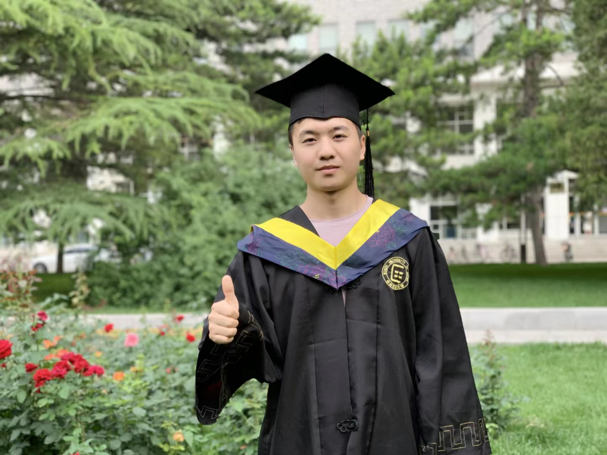

Benjia Zhou
Assistant Professor, Beijing Institute of Technology, Zhuhai
I received the Ph.D. degree in Artificial Intelligence and am currently an Assistant Professor with the Beijing Institute of Technology, Zhuhai. Previously, I was an AIGC Research Scientist with Tencent GY-Lab. My research interests include intelligent video analysis, spatio-temporal representation learning, multimodal learning, and AI-generated content (AIGC). I have published more than 15 papers in leading journals and conferences, including IEEE TPAMI, IEEE TIP, IEEE TCSVT, CVPR, ICCV, AAAI, and ACM Multimedia.
Research Interests: Intelligent Video Analysis · Spatio-temporal Representation Learning · Multimodal Learning · AI-generated Content (AIGC)
Recent News
- 2025-03: Our co-first-authored work, "C2RL: Content and Context Representation Learning for Gloss-free Sign Language Translation and Retrieval," was accepted by IEEE TCSVT.
- 2024-03: One paper on gloss-free sign language translation was accepted by COLING 2024.
- 2023-07: One paper on RGB-D action recognition was accepted by ACM MM 2023.
- 2023-07: One paper on sign language translation was accepted by ICCV 2023.
Publications
I have published more than 15 papers in leading journals and conferences. Selected papers are listed below. For the complete list, please see my Google Scholar profile.
Conference Papers
- Chen, Z., Zhou, B., Li, J., Wan, J., Lei, Z., Jiang, N., ... & Zhao, G. "Factorized Learning Assisted with Large Language Model for Gloss-free Sign Language Translation." COLING 2024.
- Zhou, B., Chen, Z., Clapés, A., Wan, J., Liang, Y., Escalera, S., ... & Zhang, D. "Gloss-free Sign Language Translation: Improving from Visual-Language Pretraining." ICCV 2023.
- Ma, Y., Zhou, B., Wang, R., & Wang, P. "Multi-stage Factorized Spatio-Temporal Representation for RGB-D Action and Gesture Recognition." ACM MM 2023.
- Zhou, B., Wang, P., Wan, J., Liang, Y., Wang, F., Zhang, D., ... & Jin, R. "Decoupling and Recoupling Spatiotemporal Representation for RGB-D-based Motion Recognition." CVPR 2022.
- Zhou, B., Li, Y., & Wan, J. "Regional Attention with Architecture-rebuilt 3D Network for RGB-D Gesture Recognition." AAAI 2021.
- Zhou, B., Wan, J., Liang, Y., & Guo, G. "Adaptive Cross-fusion Learning for Multi-modal Gesture Recognition." VRIH 2021.
Journal Articles
- Chen, Z., Zhou, B. (co-first author), Huang, Y., et al. "C2RL: Content and Context Representation Learning for Gloss-free Sign Language Translation and Retrieval." IEEE Transactions on Circuits and Systems for Video Technology (TCSVT), 2025.
- Zhou, B., Wang, P., Wan, J., Yan, L., & Wang, F. "A Unified Multimodal De- and Re-coupling Framework for RGB-D Motion Recognition." IEEE Transactions on Pattern Analysis and Machine Intelligence (TPAMI), 2023.
- Yu, Z., Zhou, B., Wan, J., Wang, P., Chen, H., Liu, X., ... & Zhao, G. "Searching Multi-rate and Multi-modal Temporal Enhanced Networks for Gesture Recognition." IEEE Transactions on Image Processing (TIP), 2021.
Awards and Honors
- Second Prize, IEEE Finland Jt. Chapter SP/CAS Best Paper Award, 2022.
- 2nd Place, HEART-MET Gesture Recognition and Activity Recognition Challenges.
- 4th Place, ICIAP Multimodal Action Recognition Competition.
Academic Service
Conference Reviewer: CVPR, AAAI, IJCAI, ACM MM, FG
Journal Reviewer: IEEE TIP, IEEE TMM, IJCV, IEEE TCSVT, CIBM, JMIR